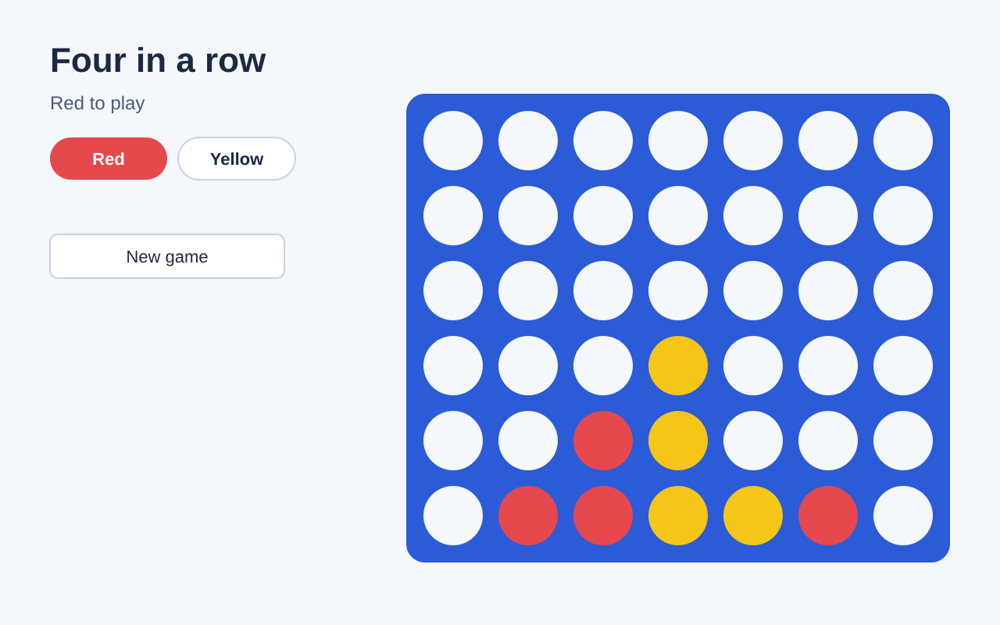

Owner, 2026-10-16. Remote people join the session from a link, like everyone else, and open the build from Open the demo on their screen, exactly as on Wi-Fi. The host turns it on inside the Share demo panel with one extra switch. It opens the same thing the Wi-Fi share opens, behind the same lock, and nothing more. The build is always a web page, even when the room is making a document; Claude is told so at the start.
The D2 panel as built, with one new row under the address. Off by default every session. The switch's words say who it reaches; it never says "tunnel".
Claude is building the counters
The chip keeps one number. The panel splits it: here (Wi-Fi) and remote. The remote link is not shown or copied: it only ever reaches people through their own Open the demo button, which carries their way in. Stop sharing turns both off.
Claude is building the counters
Remote needs one tool on the laptop the first time. The plugin says what is missing in plain words; the Wi-Fi share keeps working whatever happens to remote.
The participant never picks a route. On the host's Wi-Fi the button opens the Wi-Fi address; anywhere else it opens the remote one. The screenshot is always below.
Works from anywhere.
The first board

(a) Remote on. Same button as on Wi-Fi. Here or remote, it just works.
The demo is shared on the host's Wi-Fi only. Screenshots are below.
Ask to try itThe first board
(b) Remote off, and this device is not on the Wi-Fi. One honest line; Ask to try it lands on the host's chip.
Opening soon. The host is starting the demo for remote people.
The first board
(c) Remote starting. No dead button while the remote route comes up.
The owner's rule: remote reaches the same thing the Wi-Fi share reaches, and nothing more. So the question for each risk is what remote changes compared with the Wi-Fi share as built (plugin 1.18.0).
| Risk | Wi-Fi share today | With remote | Proposed answer |
|---|---|---|---|
| A stranger finds the address | Only people on the same Wi-Fi can even try it. | Anyone on the internet can reach the address while it is up. | The address alone opens nothing: no key, the locked page. The address is random and new each time, and never shown or copied; it is used only behind each person's own Open the demo button. |
| Someone who joined passes the link on | One key for the room; a passed link works for anyone on the Wi-Fi. | A passed link would work for anyone, anywhere. | A key per person, not per room, minted when they press Open the demo and revocable. The gateway counts devices per key; the host can see "3 devices on one person's link". Removing a player kills their key. |
| Reaching more of the laptop than the app | Only the ports Claude showed, only from this project's folder (F4). | Same gateway, same ports, same folder check. | The tunnel points at the gateway, never at the dev server. Nothing new opens. |
| The dev server's own holes (Vite path traversal, source maps, hot reload) | Reachable by key holders on the Wi-Fi. | Reachable by key holders anywhere. | Unchanged: still only key holders. Keep the gateway's method allowlist and consider blocking /@fs/ and *.map at the gateway for remote requests. |
| Snooping on the network | Plain http on the Wi-Fi; a key can be read off the air. | Better: the tunnel is https end to end. | Nothing more. (Wi-Fi stays http, as in LATER.md.) |
| It stays open by accident | Fails closed after 30 s without Engage; only session end closes it. | Same rule. | The tunnel process is a child of the gateway and dies with it. Off by default every session. |
| A third party sees the traffic | None. | Cloudflare carries it (TLS ends at their edge). | Say so in the switch's help line. Owner to decide whether that is acceptable. |